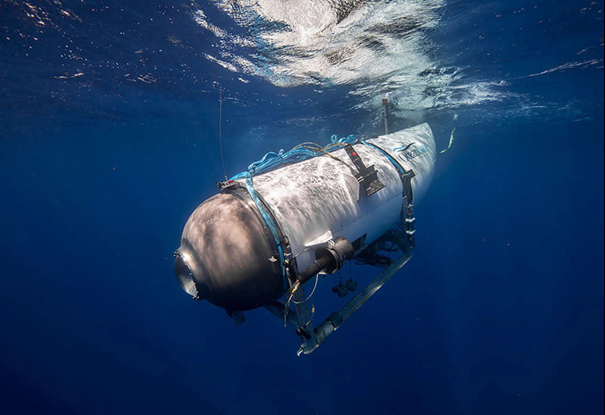

Titan submarine tragedy
On 18 June 2023, Titan, a submersible operated by American tourism and expeditions company OceanGate, imploded during an expedition to view the wreck of the Titanic in the North Atlantic Ocean off the coast of Newfoundland, Canada. On board the submersible were Stockton Rush, the CEO of OceanGate; Paul-Henri Nargeolet, a French deep sea explorer and Titanic expert; Hamish Harding, a British billionaire businessman; Shahzada Dawood, a Pakistani-British billionaire businessman; and Dawood's son Suleman.
Communication with Titan was lost 1 hour and 45 minutes into its dive. Authorities were alerted when it failed to resurface at the scheduled time later that day. After the submersible had been missing for four days, a remotely operated underwater vehicle (ROV) discovered a debris field containing parts of Titan, about 500 metres (1,600 ft) from the bow of the Titanic.
Hello im a P tag
The search area was informed by the United States Navy's (USN) sonar detection of an acoustic signature consistent with an implosion around the time communications with the submersible ceased, suggesting the pressure hull had imploded while Titan was descending, resulting in the instantaneous deaths of all five occupants.
The search and rescue operation was conducted by an international team led by the United States Coast Guard (USCG), USN, and Canadian Coast Guard.[1] Support was provided by aircraft from the Royal Canadian Air Force and United States Air National Guard, a Royal Canadian Navy ship, as well as several commercial and research vessels and ROVs.
Numerous industry experts had raised concerns about the safety of the vessel. OceanGate executives, including Rush, had not sought certification for Titan, arguing that excessive safety protocols hindered innovation.
